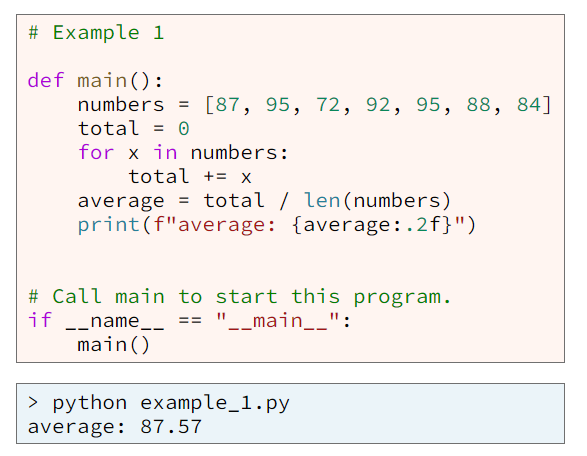
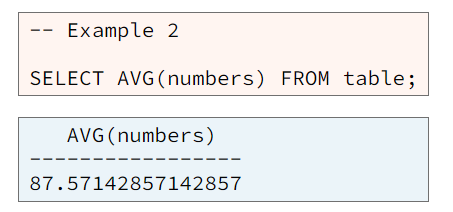
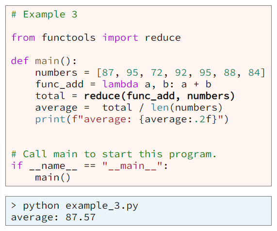
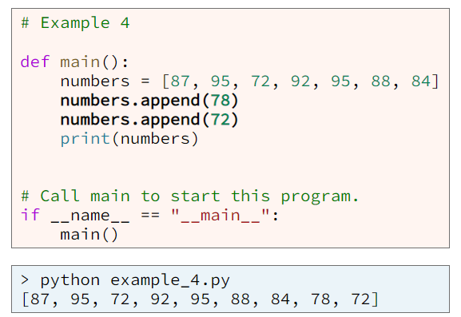
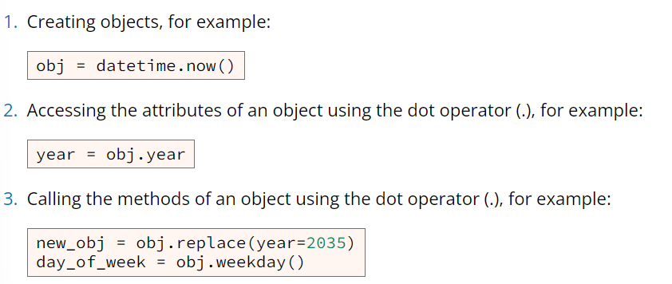
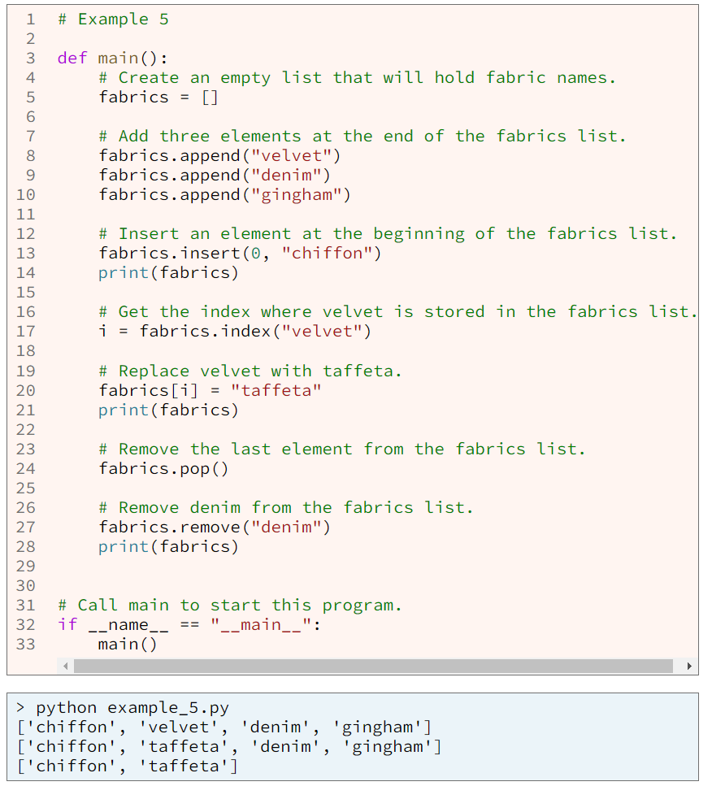
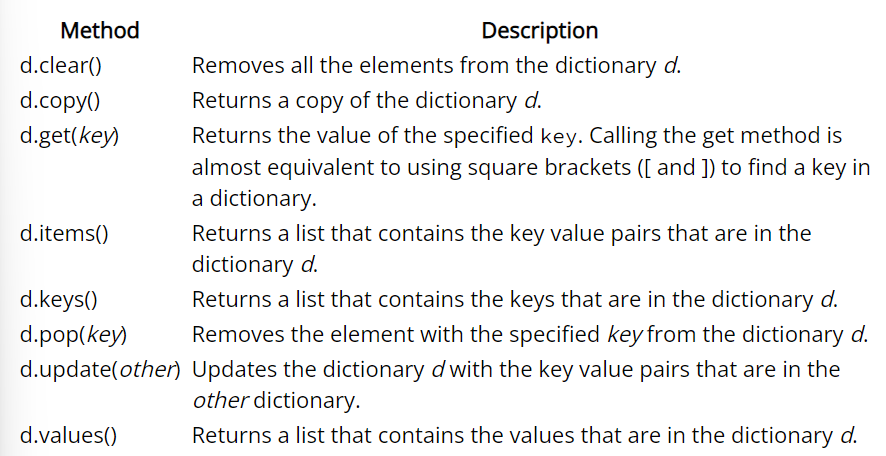
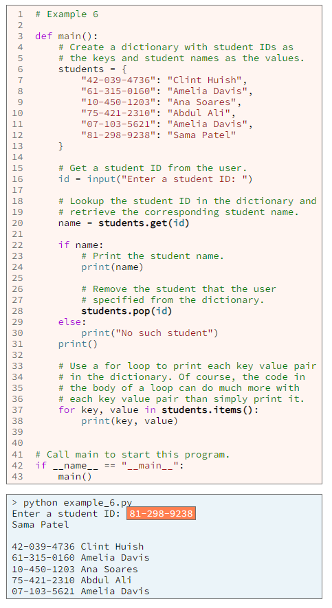

Procedural programming is a way of programming that focuces on the process or steps to accomplish a task. For example, if we had 100 numbers and wanted to know the average value of those 100 numbers, we coul add the numbers and then divide by 100. This is one process to compute the average of numbers: add them and divide by the quantity of numbers. A Python procedural program for computing the average is shown in example 1.
Notice that with procedural programming, we must write the process or the steps that are necessary to complete a task.
When we use declarative programming to program a computer, we do not focus on the process or steps to accomplish a task, but rather we focus on what we want from the task, or in other words, we focus on the desired result. Continuing the example of the average, with declarative programming, we focus on exactly what numbers we want average and tell the computer to compute that average for us. SQL is a declarative programming language used with relational databases. Example 2 contains SQL code that causes the computer to compute the average of a column of numbers.
Notice in example 2, that the code does not contain the steps required to compute the average. Someone else alreadt wrote the code that contains those steps. Instead, the SQL codne contains a command that tells the computer to compute the average of a column named numbers. The term "declarative programming" means that we write or declare what we want the computer to do. We do not tell the computer how to compute something. We declare what we want the computer to do, and the computer determines how to do it and then does it.
When we use functional programming to program a computer, we focus on the functions necessary to accomplish a task. Mathematicians often find functional programming natural for them because they are accustomed to using functions while studying mathematics. In functional programming, functions are so important that we often pass functions into other functions. Example 3 contains a functional programming solution to computing the average in Python.
Notice how example 3 uses three functions: lambda function, the reduce function, and the len function. notice also that the lambda function is passed into the reduce function. Passing a function into a function is one of the marks of functional programming
Object-oriented programming is a programming paradigm based on the concept of objects. An object is a piece of a program that contains both data (also known as attributes) and functions (also know as methods).
When we write an object-oriented program, we combine data and functions together into objects. For example, of we were writing a registration program used by students to register for courses at a university, we would write code to create student objects and course objects. Each student object would have data such as given_name, family_name, and phone_number and would have functions sch as register, enroll, drop, and withdraw. Each course object would have data such as course_code, title, description, and list_of_students and would have functions such as get_students and take_role.
Python includes many built-in and standard objects that a programmer can use to write programs. In fact, you have already used many onjects in your programs. Python lists and dictionaries are objects and have attributes and methods. Readers and writers from the CSV module are also objects.
One of the marks of object-oriented programming is selecting attributes and calling methods using the dot operator (a period). The official name of the dot operator is component selector, but almost no one calls it that because the term "dot" is much easier to say than "component selector." The code in example 4 uses the dot operator (.) to call the append method.
There are several types of commands that are commonly found in object-oriented programs. These types of commands are so common, that a programmer must be able to recognize and write them. Three of these types of commands are:
In Python, lists are objects with attributes and methods, and a programmer can modify a list by calling those methods. The list methods are documented in a section of the Python Tutorial titled More on Lists
Python dictionaries are objects with attributes and methods, and a programmer can modify a dictionary by calling those methods. There doesn't seem to be an official Python web page that documents the dictionary methods, so here is a list of the built-in dictionary methods:
The following example code calls dictionary methods at lines 20, 28, and 37.
